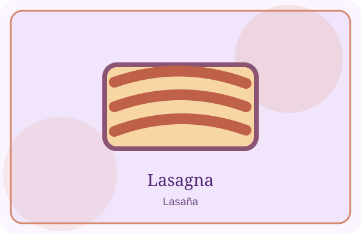
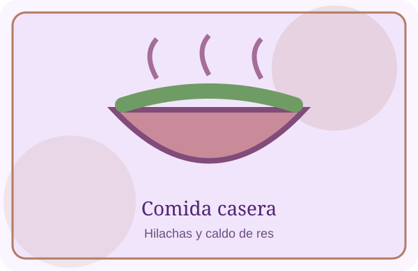

Me gusta mucho la comida casera. Entre mis platillos favoritos están las hilachas, la lasaña, el pan con pollo salvadoreño y el caldo de res.


Son comidas diferentes, pero todas tienen algo que me gusta. Algunas son perfectas para compartir en familia y otras simplemente se me antojan cuando quiero comer algo rico.